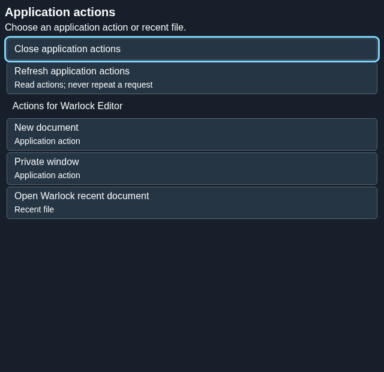
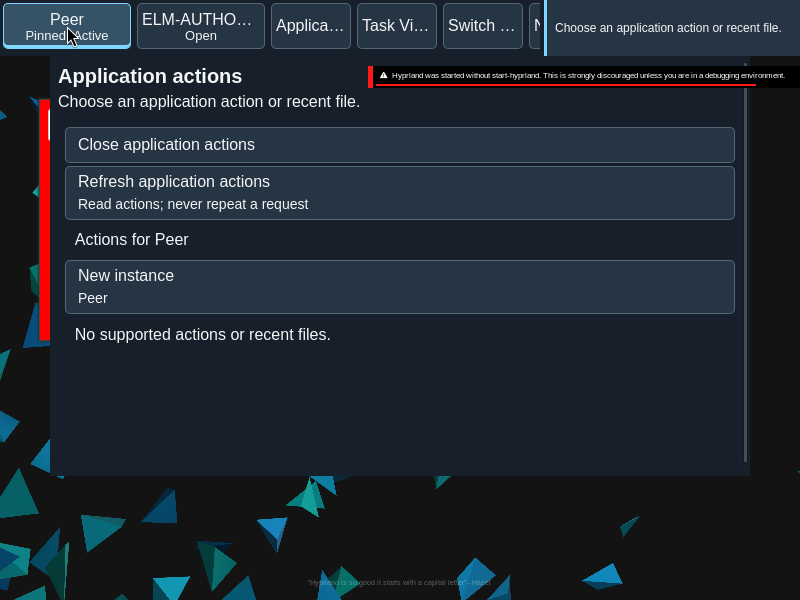

Application actions
Open actions declared by an application and its recent items from the application group.
Current beta & runtime boundary
At snapshot 6e6ad828c (2026-11-02 canonical ledger), 19 of 242 whole EARS requirements and 42 of 417 scenarios hold historical source-bound acceptance (ELM-TEA-001, ELM-TEA-002, and ELM-DEL-010, alongside published a327c8f7f Store and 6e6ad828c persistent custody CPU checks). The embedded desktop specimen below runs in-browser over deterministic fixtures, and captures in Evidence come from the frozen bc3daf7b reference baseline. Native Omarchy/Hyprland GUI, provider cleanup, AT/IME, hardware latency, and release acceptance for this surface remain OPEN.
Overview
Open actions declared by an application and its recent items from the application group.
Anatomy
The surface presents the selected application, its declared actions and available recent items. New instance appears when the catalog and launch policy support it.
States
Each action is bound to the selected application and its declared identity. An unavailable action stays unavailable; a receipt does not by itself prove that a new window exists.
Specimen
Real Elm interface. Simulated desktop. Client window interiors are fixtures. Load the desktop only when you want to explore this component.
Behavior
Open the application’s actions, choose a supported item and observe the result. New windows become visible after the desktop observes them.
Accessibility
Open actions from the application group and move through the available items with the keyboard. Each label identifies the action or recent item; unavailable entries cannot be activated. Escape closes the surface and returns focus to its opener. Keep long application names and action labels readable at enlarged text sizes.
Content
Show the application’s declared action label and recent item name. Offer New instance only when the application supports it. A launch receipt describes the request; a newly observed window supplies the evidence that a window exists.
Evidence


Captures show the running interface; they are not simulated fixtures.
View JumpList source on GitHub (external reference).